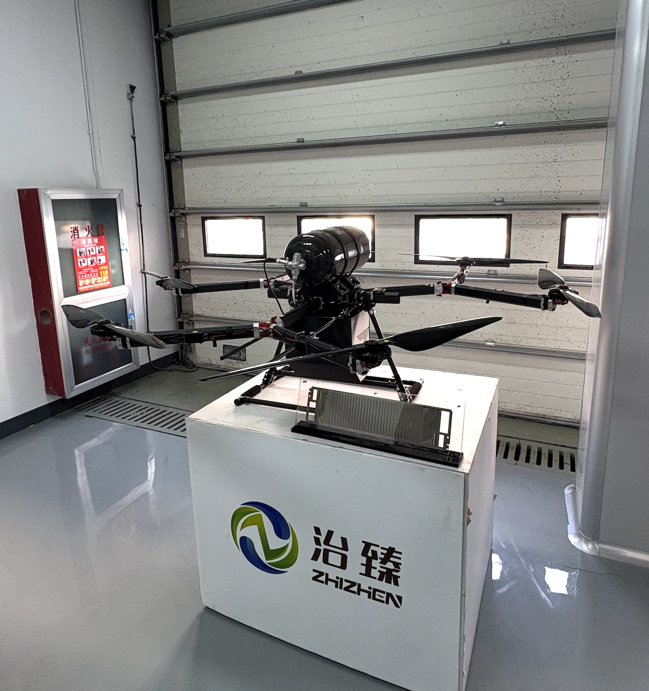

Day 14
Morning
Mr. Gu and I took an early morning train to Shanghai to go visit two suppliers. This was once again a demonstration of how much Dr. Yao and Mr. Gu were trying to expose me to the energy industry in China. It is such a privelege to first-hand see the cutting-edge developments within the field and get to ask whatever questions I want.
Bipolar Metal Plates
We first went to a company that manufactures metal bipolar plates for hydrogen fuel cell applications. They use a pressing technology that is used in other applications- for example in the making of car doors- to press the pattern for the bipolar plates into the metal sheets. The precision that these technologies have is very impressive: 0.05 cm plate thickness and 0.03 cm engraving depth.
We saw a Hydrogen drone, which was very cool. It has a much longer lifetime than a lithium ion battery, and was said to manage operationality of up to three hours. It is mostly used for military and agricultural purposes because it can lift heavy loads.

I then joined a meeting between Mr. Gu and the representative at this supplier. They kept the working language in Chinese, so I wasn’t able to understand much, but it was insightful to see how different players in this industry interact and form relationships with each other.
Break and Beach
Mr. Gu was then joining a meeting that I wasn’t allowed to sit in on. I had about two hours of time, so I decided to take a Didi car to the beach since we were nearby. It was a sunny day and I was able to take a nice walk along the water.

At this point, I have now visited:
- A Chinese Desert
- A Chinese Beach
- The Chinese Mountains
- Many Chinese Cities
- The Chinese Countryside
I felt like this was somewhat full circle, and it was a reminder of how grateful I am to have been exposed to so much during my truly short stay here.
H-Rise
I returned and met Mr. Gu. We took off for the next manufacturers: H-Rise. They focus on the develpment and manufacturing of fuel cell stacks. Because they have received traction from Investors and Government officials, they had a downstairs area that was dedicated to showcasing the technologies they have produced. As an outside perspective, this was an insightful way to digest the work done by the company and the different projects that they have in place.
We were taken through a few of their different test facilties. We saw a single 1.5 MW electrolyser, which was again so impressive for me to understand the scale of.
Some of their tiny plates were subjected to 2.5 A per cm^2 flowing through them.
Once again, Mr. Gu and the gentleman we were visiting presented a slide deck to each other of their respective companies and work. This was another point of insight into industry interactions. Mr. Gu brought up the issue of electrode corrosion and asked the gentleman if he had ever seen or experienced something similar. This was a point that was so interesting to me- even though the both of them work at different companies within the same industry and would otherwise be seen as competitors, they were eager to support each other and move forward as a single effort. The gentleman thought hard and tried to provide genuine help for Mr. Gu’s corrosion issues.
It turned dark out as we left H-Rise. The car ride back to Shanghai was quite long, but it was nice to recap and digest everything I had seen with Mr. Gu.
Last Night in Shanghai
I met my friend for a quick and late dinner. We walked around a bit, and I then went back to my hostel.
Morning and Trip back Home
The next morning, I woke up early to make the train back to Nanjing. I got some street food breakfast and hopped right onto the train. Once in Nanjing, I packed my bags, grabbed a quick lunch, and headed to the airport. My connection flight was first to Seoul, and then I would be going from there to LA.
School starts in two days, but I have had the most amazing experience here over the past two weeks. I am not sure how I will adjust back to being on my small campus, in my small university bubble after this experience.